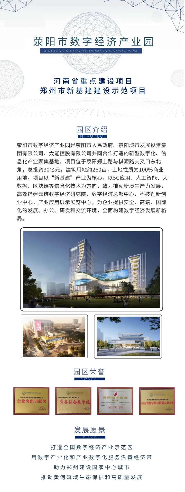
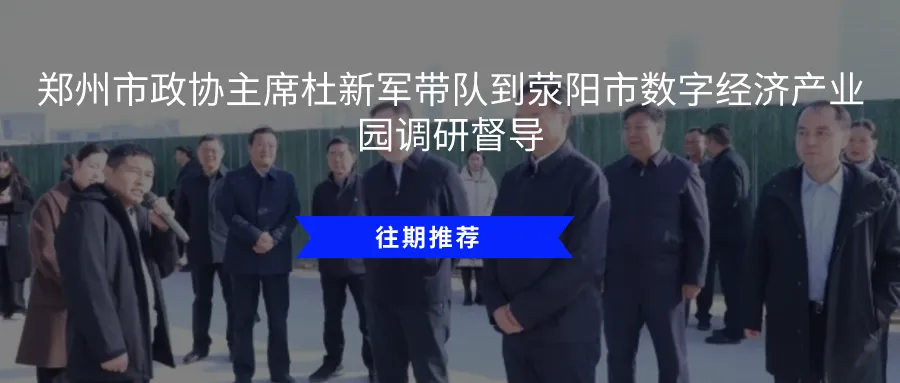
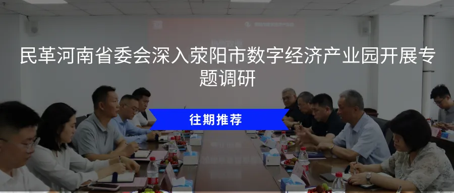

荥园观察
荥阳市数字经济产业园以周报的形式，定期为您传递园区最新资讯及动态。本期周报为您带来2月2日-2月6日园区招商情况、运营动态和数字经济产业相关资讯速览。
本期目录
园区动态
园区与郑州捷音通讯科技有限公司交流合作新机遇
行业前沿
1.工信部：突破算力芯片、工业大模型等关键技术 做优应用生态
2.湖南全面启动“数据要素价值释放年”攻坚行动
3.《广东省加快数字社会高质量建设实施意见》印发
4.广西将投入450亿元以人工智能促产业升级
5.云南省数据工作会议在昆明召开
园区动态
1. 园区与郑州捷音通讯科技有限公司交流合作新机遇
2026年2月5日，荥阳市数字经济产业园与国家级高新技术企业郑州捷音通讯科技有限公司通过线上会议形式展开深度交流，双方围绕数字技术赋能中小企业发展、AI+产业生态共建等议题达成合作共识。荥阳市数字经济产业园招商经理韩姗、郑州捷音项目经理刘博参与会议。
作为腾讯、用友、中信等头部机构战略投资的科技企业，郑州捷音通讯科技有限公司打造了行业领先的智能客户关系管理系统——EC CRM。其自主研发的SixBot平台通过构建营销、销售、客服等场景的AI智能体，实现人机协作的自动化流程。公司荣获“工信部中国中小企业首选服务商”、“36氪中国新商业引领者“、“中国SaaS优秀CRM产品奖”、“IDG度最佳CRM产品”、“腾讯云SaaS臻选产品”、“最具投资价值企业25强”、“德勤-深圳高科技高成长20强”等超过30项大奖。
行业前沿
1. 工信部：突破算力芯片、工业大模型等关键技术
做优应用生态
2月3日，中国人工智能产业发展联盟第十六次全会在北京石景山召开。工业和信息化部科技司副司长甘小斌出席会议并指出，工信部深入贯彻落实党中央部署，坚持以制造业为人工智能赋能主战场，全力推进“人工智能+制造”走深向实。下一步，将重点做好四方面工作：一是做强应用根基，突破算力芯片、工业大模型等关键技术；二是做优应用生态，强化标准引领，繁荣开源文化；三是做多国际合作，积极参与联合国、金砖、东盟等多边机制开展产业交流；四是做实应用治理，创新安全治理技术工具，加强行业自律。同时，希望联盟发挥更大作用，构建更具竞争力的产业生态。（来源：中国信通院）
2. 湖南全面启动“数据要素价值释放年”攻坚行动
2月4日，以“数聚潇湘，智创未来”为主题的湖南省数据要素产业创新发展大会暨省数据要素协会年会在长沙举行。此次会议标志着湖南省正式启动“数据要素价值释放年”攻坚行动，旨在通过深化数据要素市场化配置改革，将数据资源优势转化为高质量发展动力。
会议指出，2026年是数据要素从制度构建迈向价值实现的关键一年。省级数据主管部门负责人表示，湖南将以国家数据要素综合试验区建设为核心抓手，推动数据要素“供得出、流得动、用得好、保安全”，实现数据价值的规模化释放。作为大会核心成果，湖南省数据要素协会发布了2026年度七大重点任务，涵盖数据资产化评估、行业数据空间建设、公共数据授权运营深化、专业人才培育、跨域流通合作等关键领域，为产业实践提供清晰路径。（来源：人民网）
3. 《广东省加快数字社会高质量建设实施意见》印发
2月4日，广东省人民政府办公厅发布《广东省加快数字社会高质量建设实施意见》，围绕数字社会建设的关键领域和重点环节，提出了五个方面37个重点任务。
其中提出，打造融贯虚实的个人数字账户。探索建设个人数字账户技术支撑平台，建立便捷高效的平台运营服务体系。构建个人数字账户，整合个人在政务服务、公共服务、社会事务等领域的身份认证、数据归集、服务申办、权益管理等功能。引导群众建立适数认知能力和思维模式，加强个人数据管理、隐私保护，依法行使个人数据权利，促进个人数据合规应用。（来源：广东省人民政府）
4. 广西将投入450亿元以人工智能促产业升级
近日，广西壮族自治区两会正在南宁举行，政府工作报告显示，未来三年广西将安排450亿元人民币，支持以AI为引领的新质生产力发展。
政府工作报告中明确广西2026年发展方向，提出深化拓展“人工智能+”，将深化AI与制造业融合，开发面向糖业、新能源汽车、有色金属等领域的垂类大模型和智能体，拓展农业、文旅、民生、社会治理等多领域AI场景应用；推出人工智能标志性产品30个，力争新增自治区级智能工厂和数字化车间80家、人形机器人产量突破5000台，以及在“A超”联赛基础上合办“百业千企AI转型联合大赛”，承办首届全国医保影像AI识图大赛，促进人工智能创新应用等目标。（来源：中国新闻网）
5. 云南省数据工作会议在昆明召开
2月3日，云南省数据工作会议在昆明召开。会议明确，2026年要做好4方面重点工作：一是强化顶层设计，明确时间表、路线图。高质量编制“十五五”数字云南建设规划，配套制定数字经济、数字政府、数字社会、数字基础设施等4个政策文件，科学制定年度工作要点，加快《云南省数字经济促进条例》《云南省公共数据条例》立法进程。二是推动数据要素价值释放，以数据赋能高质量发展。深入贯彻落实《政务数据共享条例》，着力推进全省一体化公共数据平台推广应用，健全全省“5+10+N”公共数据资源体系，持续深化融信服平台建设运用，做好“一表通”工作，积极扩大公共数据资源开发利用。三是深化数字政府建设，打造高效治理新模式。完善政务信息化项目管理制度体系，深入推进项目审批、资金安排、竣工验收“三个关口”改革，持续深化政务云、电子政务外网建设，大力推广应用“云政通”平台，进一步加强安全保障能力。四是特色化差异化发展数字经济，培育转型升级新引擎。重点推动“绿电+智算”、数据标注、行业高质量数据集等发展，数据赋能人工智能纵深发展，着力培育数字经济园区，推动数字经济企业“多、活、大、强”，加强项目谋划实施，探索推进数据领域国际合作，强化数字人才队伍建设。（来源：云南省数据局）
编辑：刘琪
责编：周政






